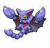
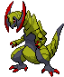
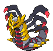

-
Garchomp #445

- Dragão
- Terra
Dizem que, quando um corre em alta velocidade, suas asas criam lâminas de vento que podem derrubar árvores próximas.
-
Gliscor #472
- Terra
- Voador
Ele observa a presa enquanto está pendurado de cabeça para baixo em galhos. Quando a chance se apresenta, ele mergulha!
-
Metagross #375

- Aço
- Psíquico
Como os poderes magnéticos desses Pokémon ficam mais fortes em temperaturas congelantes, os Metagross que vivem em montanhas nevadas são cheios de energia.
-
Typhlosion #157

- Fogo
Typhlosion se esconde atrás de uma névoa de calor brilhante que vem de suas chamas extremamente quentes. Este Pokémon cria erupções que transformam tudo em cinzas.
-
Haxorus #611
- Dragão
Este Pokémon faz seus ninhos em cavernas e minas abandonadas. É dócil, mas ficará incrivelmente bravo se suas presas forem tocadas, então cuidado.
-
Giratina #487
- Fantasma
- Dragão
Dizem que este Pokémon vive em um mundo ao contrário do nosso, onde o conhecimento comum é distorcido e estranho.
-
Zoroark #571

- Sombrio
Histórias dizem que aqueles que tentaram pegar Zoroark ficaram presos em uma ilusão e foram punidos severamente.
-
Umbreon #197

- Sombrio
Quando exposto à aura da lua, os anéis em seu corpo brilham levemente e ele ganha um poder misterioso.